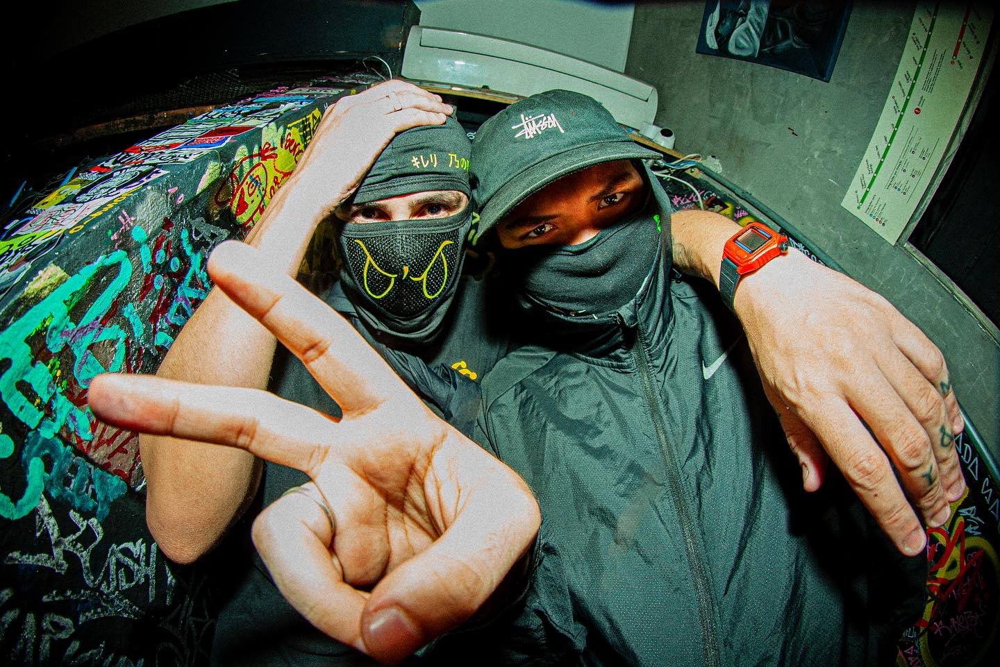

Pumapjl, nascido e criado no subúrbio do Rio de Janeiro, começou os experimentos musicais retratando seu cotidiano aos 17 anos de idade. Com a infância e adolescência turbulenta, repleta de aventuras, ele encontrou na música o prazer de registrar a beleza e o caos que moram nas situações do dia a dia de um carioca.



PUMAPJL
criado por @guivianx